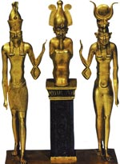

Міфологія Стародавнього Єгипту
Джерела вивчення міфології Древнього Єгипту відрізняються неповнотою і несистематичностью викладу. Характер і походження багатьох міфів реконструюються на основі пізніх текстів. Основними пам'ятниками, що відбили міфологічного представлення єгиптян, є різноманітні релігійні тексти: гімни і молитви богам, записи похоронних обрядів на стінах гробниць. Найбільш значні з них - «Тексти пірамід» - найдавніші тексти заупокійних царських ритуалів, вирізані на стінах внутрішніх приміщень пірамід фараонів V і VI династій Давнього царства (XXVI - XXIII століття до нашої ери); «Тексти саркофагів», що збереглися на саркофагах епохи Середнього царства (XXI - XVIII століття до нашої ери), «Книга мертвих» - составлявшаяся починаючи з періоду Нового царства й до кінця історії Єгипту.
Єгипетська міфологія почала формуватися в VI - IV тисячоліттях до нашої ери, задовго до виникнення класового суспільства. У кожній області (номі) складається свій пантеон і культ богів, втілених у небесні світила, каменях, деревах, птахів, змій. Значення єгипетських міфів неоціненно, вони дають цінний матеріал і для порівняльного вивчення релігійних уявлень на Давньому Сході, і для дослідження ідеології греко-римського світу, і для історії виникнення і розвитку християнства.
Космогонічні міфи. Судячи з даних археології, в найдавніший період єгипетської історії ще не було космічних богів, яким приписували створення світу. Вчені вважають, що перша версія цього міфу виникла незадовго до об'єднання Єгипту. Згідно з цією версією, сонце народилося від союзу землі і неба. Це уособлення, безсумнівно, древнє, ніж космогонічні ідеї жерців з великих релігійних центрів. Як завжди, від вже існуючого міфу не відмовлялися, і образи Геба (бога землі) і Нут (богині неба) як батьків бога сонця Ра зберігаються в релігії протягом усього стародавньої історії. Щоранку Нут виробляє світ сонце і щовечора ховає його на ніч у своєму череві.
Богословські системи, пропонували іншу версію створення світу, виникли, ймовірно, в один і той же час в декількох найбільших культових центрах: Гелиополе, Гермополе і Мемфісі. Кожен з цих центрів оголошував творцем світу свого головного бога, який був, в свою чергу, батьком інших богів, що об'єднувалися навколо нього. Загальною для всіх космогонічних концепцій була ідея про те, що створення світу передував хаос води, зануреної в вічну темряву. Початок виходу з хаосу пов'язувалося з виникненням світла, втіленням якого було сонце. Подання про водному просторі, з якого з'являється спочатку невеликий пагорб, тісно пов'язане з єгипетськими реаліями: воно майже в точності відповідає щорічному розливу Нілу, мулисті води якого покривали всю долину, а потім, відступаючи, поступово відкривали землю, готову до оранки. У цьому сенсі акт створення світу як би повторювався щорічно. Єгипетські міфи про початок світу є єдиного, незбираного оповідання. Часто одні і ті ж міфологічні події зображені по-різному, і боги в них виступають в різному вигляді.
Цікаво, що при безлічі космогонічних сюжетів, пояснюють створення світу, надзвичайно мало місця приділяється створенню людини. Давнім єгиптянам здавалося, що боги створили світ для людей. У письмовому літературній спадщині Єгипту дуже мало прямих вказівок на створення роду людського, такі вказівки - виняток. В основному ж єгиптяни обмежувалися переконанням, що людина зобов'язана своїм існуванням богам, які чекають від цього при цьому подяки, що розуміється дуже просто: людина повинна поклонятися богам, будувати і утримувати храми, регулярно здійснювати жертвопринесення.
Жерці Геліополя створили свою версію виникнення світу, оголосивши його творцем бога сонця Ра, ототожненого з іншими богами - творцями Атумом і Хепри ( «Атум» означає «Досконалий», ім'я «Хепри» можна перекласти як «Той, хто виникає» або «Той, хто приводить до виникнення »). Атума зазвичай зображували у вигляді людини, Хепри як скарабея, а це значить, що його культ сходить на той час, коли богам надавали вигляд тварин. Цікаво, що у Хепри ніколи не було власного місця культу. Як уособлення висхідного сонця, він був тотожний Атуму - вечірнього сонця і Ра - светящему днем. Надає йому вигляд скарабея був пов'язаний з переконанням, що цей жук здатний розмножуватися сам по собі, звідси його божественна творча сила. А вид скарабея, що штовхає свою кулю, підказав єгиптянам образ бога, катящего сонце по небу.
Міф про створення світу Атумом, Ра й Хепрі записаний в «Текстах пірамід», а до того часу, коли текст його вперше був висічений в камені, він, ймовірно, існував уже давно і був широко відомий. Згідно «Текстам пірамід», Ра - Атум - Хепри створив себе сам, виникнувши з хаосу, іменованого Нуном. Нун, або Первоокеан, зображувався звичайно як неозоре одвічної водний простір. Атум, з'явившись з нього, не знайшов місця, на якому йому можна було б утриматися. Тому він в першу чергу створив пагорб Бен-бен. Стоячи на цьому острівці твердого ґрунту, Ра-Атум-Хепри приступив до створення інших космічних богів. Оскільки він був один, першу пару богів йому довелося народити самому. Від союзу цієї першої пари сталися інші боги, таким чином, відповідно до гелиопольскому міфу, з'явилися земля і правлячі нею божества. У триває акті твори від першої пари богів - Шу (Повітря) і Тефнут (Волога) - народилися Геб (Земля) і Нут (Небо). Вони в свою чергу породили двох богів і двох богинь: Осіріса, Сета, Ісіда і Нефтиду. Так виникла Велика Дев'ятка богів - Гелиопольская Еннеада. Ця версія створення світу була єдиною в єгипетській міфології. За одним із переказів, творцем людей був, наприклад, гончар - бог Хнум, який представлявся в образі барана, - який виліпив їх із глини.
Богослови Мемфіса, найбільшого політичного і релігійного центру Стародавнього Єгипту, одного з його столиць, включили в свій міф про створення світу багатьох богів, належали різним релігійним центрам, і підпорядкували їх Пта як творця всього. Мемфісу варіант космогонії проти гелиопольским значно більше відвернений: світ і боги створені не за допомогою фізичного акта - як в процесі творення Атумом, - а виключно думкою і словом.
Іноді небесне склепіння видавався як корови з тілом, покритим зірками, але існували уявлення, згідно з якими небо - це водна поверхня, небесний Ніл, по якому вдень сонце вдень обтікає землю. Під землею теж є Ніл, по ньому сонце, спустившись за обрій, пливе вночі. Ніл, що протікає по землі, олицетворялся образі бога Хапі, який сприяв врожаю своїми благодатними розливами. Сам Ніл також населяли добрими і злими божествами в образі тварин: крокодилів, гіпопотамів, жаб, скорпіонів, змій і т. Д. Родючістю полів відала богиня - володарка засіків і комор Рененутет, почитавшаяся в образі змії, яка з'являється на полі під час жнив, стежачи за ретельністю жнив. Урожай винограду залежав від бога виноградної лози Шаї.
Міфи заупокійного культу
Велику роль в єгипетській міфології грали уявлення про потойбічне життя як безпосередньому продовженні земної, але тільки в могилі. Її необхідні умови - збереження тіла померлого (звідси звичай муміфіковані трупи), забезпечення житла для нього (гробниці), їжі (принесені живими заупокійні дари та жертви). Пізніше виникають уявлення про те, що померлі (тобто їх ба, душа) днем ??виходять на сонячне світло, злітають на небо до богів, мандрують по підземному царству (дуат). Сутність людини мислилася в нерозривній єдності його тіла, душ (їх, вважалося, було кілька: ка, ба; російське слово «душа», однак, не є точною відповідністю єгипетського поняття), імені, тіні. Мандрівну по підземному царству душу підстерігають різноманітні чудовиська, уникнути яких можна з допомогою спеціальних заклинань і молитов. Над покійним Осіріс разом з іншими богами вершить загробний суд (йому спеціально присвячена 125-й розділ «Книги мертвих»). Перед лицем Осіріса відбувається психостасия: зважування серця померлого на терезах, врівноважених істиною (зображенням богині Маат або її символами). Грішника пожирало страшне чудовисько Амт (лев з головою крокодила), праведник оживав для щасливого життя на полях иару. Чи виправданий на суді Осіріса міг бути лише покірний і терплячий в земного життя, той, що не крав, не зазіхав на храмове майно, яке не поставав, чи ніхто зла проти царя і т. Д., А також «чистий серцем» ( «Я чистий , чистий, чистий »- стверджує померлий на суді).
Землеробські міфи
Третій основний цикл міфів Давнього Єгипту пов'язані з Осирисом. Культ Осіріса пов'язаний з поширенням землеробства в Єгипті. Він бог продуктивних сил природи (в «Книзі мертвих» він названий зерном, в «Текстах пірамід» - богом виноградної лози), в'янучої і воскресає рослинності. Так, сівши вважався похороном зерна - Осіріса, поява сходів сприймалося як його відродження, а зрізання колосків під час жнив - як умертвіння бога. Ці функції Осіріса відбилися в надзвичайно поширеному оповіді, що описує його смерть і відродження. Осіріса, щасливо царював в Єгипті, підступно вбив його молодший брат, злий Сет. Сестри Осіріса Ісіда (в той же час є його дружиною) і Нефтида довго шукають тіло вбитого, а знайшовши, оплакують. Ісіда зачинає від мертвого чоловіка сина Гора. Змужнівши, Гор вступає в боротьбу з Сетом, на суді богів він за допомогою Ісіди домагається визнання себе єдиним правомочним спадкоємцем Осіріса. Перемігши Сета, Гор воскрешає батька. Однак Осіріс, не бажаючи залишатися на землі, стає царем загробного світу і верховним суддею над померлими. Трон Осіріса на землі переходить до Гору. В іншому варіанті міфу відродження Осіріса зв'язується з щорічними розливами Нілу, які пояснюються тим, що Ісіда, що оплакує Осіріса, після «ночі сліз» наповнює річку своїми слізьми.
Пов'язані з Осирисом міфи знайшли відображення в численних обрядах. В кінці останнього зимового місяця «хойяк» - початку першого місяця весни «тібі» відбувалися містерії Осіріса, під час яких в драматичній формі відтворювалися основні епізоди міфу про нього. Жриці в образах Ісіди і Нефтіди зображували пошуки, оплакування і поховання бога. Потім відбувався «великий бій» між Гором і Сетом. Драма завершувалася поставленням присвяченого Осірісу стовпа «джед», який символізував відродження бога і, опосередковано, - всієї природи. У додинастический період свято закінчувався боротьбою двох груп учасників містерій: одна з них представляла літо, а інша - зиму. Перемогу завжди брало літо (відродження природи). Після об'єднання країни під владою правителів Верхнього Єгипту характер містерій змінюється. Тепер борються дві групи, одна з яких в одязі верхнього Єгипту, а інша - Нижнього. Перемога, природно, залишається за групою, яка символізує Верхній Єгипет. У дні містерій Осіріса справлялися також драматизовані обряди коронації фараонів. Під час містерії молодий фараон виступав в ролі Гора - сина Ісіди, а померлий цар зображувався Осирисом, що сидить на троні.
Характер Осіріса як бога рослинності відбився і в іншому циклі обрядів. У спеціальному приміщенні храму встановлювався зроблене з глини подобу фігури Осіріса, яке засівалось зерном. До свята Осіріса його зображення покривалося зеленими сходами, що символізувало відродження бога. На малюнках нерідко зустрічається мумія Осіріса з пророслими з неї сходами, які поливає жрець.
Подання про Осіріса як про бога родючості було перенесено і на фараона, який вважався магічним осередком родючості країни і тому брав участь у всіх основних обрядах землеробського характеру: з настанням часу підйому Нілу кидав в річку сувій - указ про те, що початок розливу настало; перший урочисто починав підготовку грунту для посіву; зрізав перший сніп на святі жнив, за всю країну приносив вдячну жертву богині врожаю Рененутет і статуям померлих фараонів після закінчення польових робіт.
Яскравий слід в єгипетській міфології залишив культ тварин, широко поширених в усі періоди єгипетської історії. Боги у вигляді тварин, з головами птахів і звірів, боги-скорпіони, змеебогі діють в єгипетських міфах поряд з божествами в людській подобі. Чим могутніше вважався бог, тим більше приписувалося йому культових тварин, у вигляді яких він міг поставати перед людьми.
У єгипетських міфах знайшли відображення особливості світосприйняття мешканців долини Нілу, їх уявлення про походження світу і його влаштувало, що склалися протягом тисячоліть і сягають своїм корінням в первісні часи. Тут і спроби знайти витоки буття в біологічному акті твори богів, пошуки початкової субстанції, уособленої божественними парами, - зародок пізніших вчень про першоелементів світу, і, нарешті, як одне з вищих досягнень єгипетської теологічної думки - прагнення пояснити походжень світу, людей і всієї культури як результат творчої сили, втіленої в слові бога.